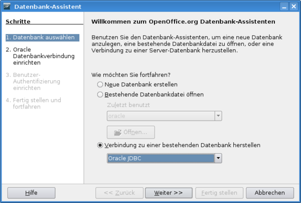
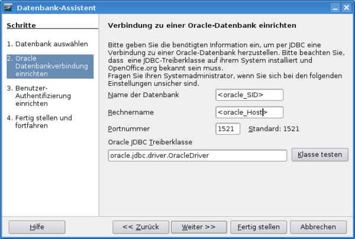
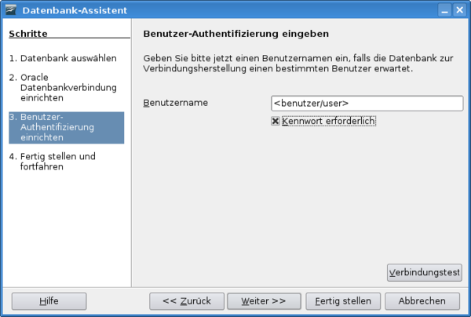
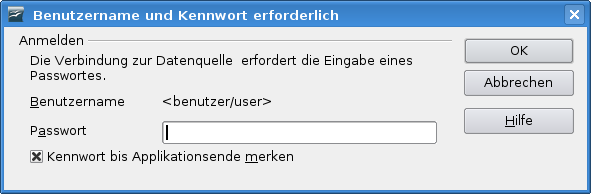
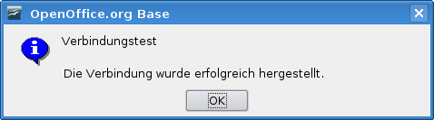
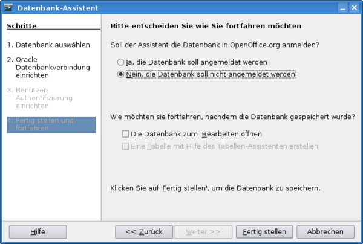
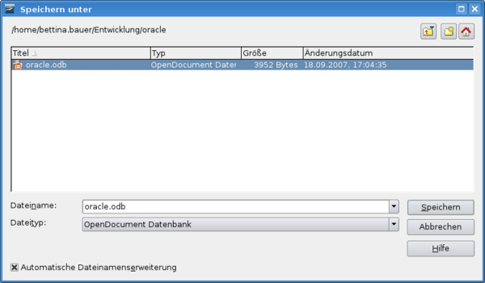

JDBC-Treiber downloaden
Für den Zugriff auf eine Datenbank wird ein jdbc-Treiber benötigt.
http://dba.openoffice.org/FAQ/specific.html#oracle
Passend zur anzusteuernden Oracle-Datenbank bzw. zum verwendeten JAVA ist der passende JDBC-Treiber zu verwenden: ojdbc5.jar mit 11g und JDK 1.5, ojdbc6.jar mit 11g und JDK 1.6, ojdbc12.jar mit 10g und JDK 1.2+1.3, ojdbc14.jar mit 10g und JDK 1.4 + 1.5.
Der Treiber sollte nicht auf einem Netzlaufwerk, sondern lokal abgelegt werden.
JDBC-Treiber einbinden
Systemweit
Der JDBC-Treiber kann systemweit über eine referatseigene OpenOffice.org Vorkonfiguration eingebunden werden.
Eintrag DataAccess.xcu
<node oor:name="JDBC">
<node oor:name="DriverClassPaths">
<node oor:name="oracle.jdbc.driver.OracleDriver" oor:op="replace">
<prop oor:name="Path">
<value>file:///<Pfad der.jar Datei>/<Name.jar></value>
</prop>
</node>
</node>
</node>
Für einen generellen Funktionstest kann die DataAccess.xcu auch im eigenen Profil erzeugt werden (im Verzeichnis
~/.openoffice.org/3/user/registry/data/org/openoffice/Office).
Benutzerweit
Für einen einzelnen Benutzer einbinden:
- OOo Writer → Extras → Optionen... → OpenOffice.org → Java → Button "Class Path" → Button "Archive hinzufügen..." → entsprechende .jar Datei bzw. .zip Datei des JDBC-Treibers auswählen → Button "Öffnen" → Fenster "Class Path" → Button "OK" → Fenster "Optionen-OpenOffice.org-Java" → Button "OK"
OOo Base aufrufen
Basisclient
Über die Konsole
- K-Menü → Systemadministration → Konsole (Terminal) → Eingabe: soffice -base oder sbase
Windows
Über das Windows Startmenü\ *Windows Startmenü → Programme → OpenOffice.org → OpenOffice.org Base
Über die Windows Eingabeaufforderung\ *Eingabeaufforderung → Eingabe: <OpenOffice.org Installationspfad>\program\sbase
Einmaliges erstellen der benötigten OOo-Base Datenbank
OOo_Base_aufrufen
Datenbank auswählen

Datenbankverbindung einrichten

Über den Button "Klasse testen" kann die entsprechende JDBC-Treiberklasse getestet werden.
Benutzer-Authentifizierung einrichten

Verbindung zur Datenbank testen
Schritt 3. Benutzer-Authentifizierung einrichten→Button "Verbindungstest"

Foldende Meldung kommt, wenn der Verbindungstest erfolgreich war.

Fertig stellen und fortfahren

OOo Datenquelle speichern

OOo Base Datenbank bereitstellen
OOo Base Datenbank auf dem Webserver bereitstellen
Damit die OOo Base Datenbank von mehreren Benutzern benutzt werden kann, ist es zu empfehlen die .odb Datei auf den Webserver zu legen.
OOo Base Datenbank über den WollMux registrieren
Damit eine OOo Base Datenbank verwendet werden kann, muss diese über einen Registriere-Abschnitt registriert werden. Ein Datenquelle kann z.B. in der referat.conf registriert werden.
Beispiel mit der vorher erstellten oracle.odb:
Datenquellen(
Registriere(
NAME "MeineOOoDatenquelle" # <Name_der_OOo_Datenquelle>
URL "http://<Pfad>/oracle.odb" # <URL_der_odb_Datei>
REFRESH "true" # <true_oder_false>
)
)
Weiter Informationen:
Einrichten einer OOo Datenquelle
Für den Zugiff auf eine externe Datenbank mit dem WollMux, muss in der
referat.conf eine OOo Datenquelle definiert werden, die auf die
registrierte OOo Base Datenbank verweist. Ebenso kann eine eigene .conf
Konfigurationsdatei erstellt werden, die über ein %include "
Beispiel mit DB-Schema zum Dialog "Empfänger auswählen" anbinden:
Datenquellen(
Datenquelle(
NAME "MeineOOoDatenquelle" # <Name_der_WollMux_Datenquelle>
TYPE "ooo"
SOURCE "oracle" # <Name_der_in_OOo_registrierten_Datenquelle
TABLE "<Name_der_Tabelle_oder_Sicht>"
USER "`<Benutzername / User>"
PASSWORD "<Passwort>"
SQL_SYNTAX "oracle" # <optional Syntaxbezeichner, unterstützt: ansi, oracle, mysql >
Schema("<DB-Spalte mit Namen>" "<DB-Spalte mit Straße>" "<DB-Spalte mit PLZ>" "<DB-Spalte mit Ort>")
Schluessel("<DB-Spalte mit Namen>")
# Wenn ein Schema()-Abschnitt angegeben ist, muss auch ein Schluessel-Abschnitt angegeben werden.
)
)
siehe Einrichten einer OOo Datenquelle
Dialog "Empfänger auswählen" anbinden
Der Dialog "Empfänger auswählen" kann über die Konfigurationsdatei adressauswahl-referat.conf z.B durch einen extra Reiter, erweitert werden. Als Beispiel dienen die Spielwarenläden in der adressauswahl-referat.conf, dessen Eintrag kopiert und angepasst werden kann. Die Datei adressauswahl-referat.conf wird durch das xupdate Script nicht überschrieben.
Beispielanpassung für Spielwarenläden:
MeineOOoDatenquelle( # Name der Datenquelle mit dem Typ ooo
TITLE "<Titel>"
CLOSEACTION "back"
TIP "Einen Namen als Empfänger auswählen"
Intro(
(LABEL "Sie können nach Namensbestandteilen oder Straßennamen suchen" TYPE "label" )
(TYPE "glue")
)#Intro
Suche(
(TYPE "textfield" ID "suchanfrage" ACTION "search" AUTOFILL "")
(LABEL "Suchen" TYPE "button" HOTKEY "S" ACTION "search")
)#Suche
Suchstrategie(
MeineOOoDatenquelle()
MeineOOoDatenquelle(<DB-Spalte mit Namen> "${suchanfrage1}*" ) # Die DB-Spalten müssen in der Datenquellen-Definition bei "Schema" eingetragen sein
MeineOOoDatenquelle(<DB-Spalte mit Namen> "${suchanfrage1} ${suchanfrage2}" )
MeineOOoDatenquelle(<DB-Spalte mit Namen> "${suchanfrage1} ${suchanfrage2} ${suchanfrage3}*" )
MeineOOoDatenquelle(<DB-Ppalte mit PLZ> "${suchanfrage1}" )
MeineOOoDatenquelle(<DB-Spalte mit Namen> "${suchanfrage1} ${suchanfrage2} ${suchanfrage3}" )
MeineOOoDatenquelle(<DB-Spalte mit Namen> "${suchanfrage1} ${suchanfrage2}" )
MeineOOoDatenquelle(<DB-Spalte mit Namen> "${suchanfrage1}" )
)#Suchstrategie
Spaltenumsetzung(
EmpfaengerZeile1(VALUE("<DB-Spalte mit Namen>"))
EmpfaengerZeile2(VALUE("<DB-Spalte mit Straße>"))
EmpfaengerZeile3(CAT(VALUE("DB-Spalte mit PLZ>") " " VALUE("<DB-Spalte mit Ort>")))
)
Suchergebnis(
(LABEL "Suchergebnis" TYPE "label")
(TYPE "listbox" ID "suchergebnis" LINES "10" ACTION "select"
DISPLAY "${EmpfaengerZeile1}") #Bezieht sich schon auf Ergebnis nach Spaltenumsetzung
)#Suchergebnis
Vorschau( #Bezieht sich schon auf Ergebnis nach Spaltenumsetzung
(LABEL "Vorschau" TYPE "label")
(LABEL "Empfänger Zeile 1" DB_SPALTE "EmpfaengerZeile1" TYPE "textfield" READONLY "true")
(LABEL "Empfänger Zeile 2" DB_SPALTE "EmpfaengerZeile2" TYPE "textfield" READONLY "true")
(LABEL "Empfänger Zeile 3" DB_SPALTE "EmpfaengerZeile3" TYPE "textfield" READONLY "true")
(TYPE "glue")
)#Vorschau
Fussbereich(
(LABEL "Abbrechen" TYPE "button" HOTKEY "A" ACTION "back")
(TYPE "glue")
(LABEL "Auswählen" TYPE "button" HOTKEY "S" ACTION "select")
)#Fussbereich
) #MeineOOoDatenquelle
Weitere Informationen: